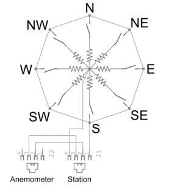

Water Flow Sensor คือ Sensor ที่ทำหน้าที่ในการวัดอัตราการไหลของของเหลว ที่ไหลผ่านตัว Sensor หรือนำ
ค่าที่วัดได้มาคำนวณเป็นปริมาณน้ำก็ได้ครับ โดยปกติแล้วค่าที่วัดได้จะออกมาเป็นสัญญาณ Pulse (เกือบทุกรุ่นจะ
เหมือนกัน) โดยปกติแล้วเราจะใช้ขา EXT Interrupt รับค่า เหมือนๆกับ Encoder
คุณสมบัติทางเทคนิค
1. มีข้อต่อสำหรับทางน้ำเข้าและทางน้ำออก
เมื่อน้ำไหลเข้ามาในตัวตรวจจับแกนหมุนที่อยู่ภายในจะหมุน ทำให้แม่เหล็กที่ติดอยู่กับใบพัดของแกนหมุนนั้น
3. เกิดการเคลื่อนที่ผ่านตัวตรวจจับฮอลล์เอฟเฟ็กต์ทำให้เกิดสัญญาณพัลส์ตามความเร็วของกระแสน้ำที่ไหลเข้ามาในตัวตรวจจับ
4. แรงดันใช้งานคือ 5-18V กินกระแสไฟฟ้า 15mA ที่ไฟเลี้ยง +5V น้ำหนักรวม 43 กรัม
5. ตรวจจับอัตราการไหลของน้ำได้ในช่วง 0.5 ถึง 60 ลิตรต่อนาที
6. ย่านความกดอากาศที่ใช้งานได้คือ ต่ำกว่า 1.2Mpa
7. อุณหภูมิของน้ำที่ไหลผ่านต้องอยู่ในย่าน 0 ถึง 80 องศาเซลเซียส
8. ความผิดพลาดในการตรวจจับน้อยกว่า 3 %
9. ทางน้ำเข้าออกมีเส้นผ่านศูนย์กลาง 1/2 นิ้ว มีเกลียวสำหรับขันยึดกับท่อ
10. ที่สายเอาต์พุตเมื่อนำไปต่อกับไมโครคอนโทรลเลอร์ควรต่อตัวต้านทาน 10kΩ พูลอัป
11. เพื่อกำหนดสถานะลอจิกที่แน่นอนในขณะที่ยังไม่มีการตรวจจับให้เป็นลอจิก "1"
12. เมื่อเกิดการตรวจจับสายเอาต์พุตจะให้สัญญาณเอาต์พุตเป็นพัลส์ที่แอกตีฟด้วยลอจิก
"0"
13. สัญญาณพัลส์เอาต์พุตมีค่าดิวตี้ไซเคิลในช่วง 40 ถึง 60%
ตัวตรวจรู้วัดความเป็นกรด – เบส
การตรวจวัดพีเอชน้ำ (pH) ความเป็นกรด-เบส หรือค่าพีเอช (pH) เป็นค่าที่บอกปริมาณของกรดที่ปนอยู่ในน้ำ ค่าพีเอชมีอิทธิพลต่อปฏิกิริยาเคมีส่วนใหญ่ที่เกิดขึ้นในน้ำ น้ำบริสุทธิ์ที่ปราศจากสิ่งปนเปื้อน (และต้องไม่สัมผัสกับอากาศด้วย) จะมีค่าพีเอชเท่ากับ 7 น้ำซึ่งมีสิ่งเจือปนอยู่ด้วยอาจจะมีค่าพีเอชเท่ากับ 7 ได้ ถ้าน้ำนั้นมีกรดและเบสอยู่ในปริมาณที่เท่ากันและสมดุลกัน ถ้าน้ำมีค่าพีเอชต่ำกว่า 7 แสดงว่า น้ำนั้นมีปริมาณกรดอยู่มากเกินจุดที่สมดุล แต่ถ้ามีค่าพีเอชมากกว่า 7 แสดงว่าในน้ำนั้นมีเบสมากเกินจุดที่สมดุล
โดยธรรมชาติแล้ว น้ำฝนที่ไม่มีสิ่งปนเปื้อนจะมีค่าพีเอชอยู่ระหว่าง 5 – 6 ดังนั้นแม้ว่าน้ำฝนที่ตกในบริเวณที่มีภาวะมลพิษน้อยที่สุดบนพื้นโลก ก็ยังคงมีส่วนเป็นกรดอยู่นั่นเอง ทั้งนี้เนื่องจากแก๊สคาร์บอนไดออกไซด์จากอากาศสามารถละลายได้ในหยดน้ำฝน น้ำกลั่นที่สัมผัสกับอากาศก็จะมีค่าพีเอชประมาณ 5 – 6 เช่นกัน ฝนกรดส่วนใหญ่มักจะมีค่าพีเอชประมาณ 4 แต่ถ้าเป็นหมอกในเขตเมืองอาจจะมีค่าพีเอชต่ำกว่า 2 ก็ได้ น้ำในทะเลสาบและลำธารส่วนใหญ่จะมีค่าพีเอชอยู่ระหว่าง 6.5 – 8.5 เราอาจจะพบน้ำซึ่งมีสภาพเป็นกรดเองโดยธรรมชาติในบริเวณที่มีสินแร่บางชนิดอยู่ในดิน (เช่น ซัลไฟด์) การทำเหมืองแร่อาจจะมีสินแร่บางอย่างที่ทำให้เกิดกรดถูกปล่อยลงสู่แหล่งน้ำเช่นเดียวกัน น้ำที่มีสภาพเป็นเบสเองโดยธรรมชาติมักจะพบเฉพาะในดินที่มีสินแร่บางชนิดปนอยู่มาก เช่น ปูนขาว หรือหินปูน
ค่าพีเอชในน้ำจะมีอิทธิพลสูงต่อสิ่งมีชีวิตที่อยู่ในแหล่งน้ำนั้น กบ และสัตว์ครึ่งน้ำครึ่งบก มักจะไวต่อน้ำที่มีค่าพีเอชต่ำๆ แมลง สัตว์ครึ่งน้ำครึ่งบก และปลา จะไม่สามารถดำรงชีวิตในแหล่งน้ำที่น้ำมีค่าพีเอชต่ำกว่า 4 ได้การตรวจวัดค่าพีเอชสามารถทำได้หลายวิธี เช่น ใช้กระดาษวัดค่าพีเอช (pH Paper) ปากกาวัดค่าพีเอช (pH Pen) เครื่องมือวัดค่าพีเอช (pH Meter) ซึ่งในกิจกรรมนี้จะตรวจวัดค่าพีเอช โดยใช้ปากกาวัดค่าพีเอช และเครื่องวัดค่าพีเอช ซึ่งจะแสดงค่าที่ถูกต้องแม่นยำมากกว่าการใช้กระดาษวัดค่าพีเอช
รายละเอียด PH Sensor
Analog pH Meter (pH Sensor) เป็นเซ็นเซอร์สำหรับวัดความเป็น กรด-เบส ของสารละลายโดยค่าที่วัดได้จะอยู่ในช่วง 0 – 14 pH output เป็นแบบ Analog (0-1023) ใช้ไฟเลี้ยง 5V
SPECIFICATION
Module Power : 00V
Module Size : 43 x 32mm
Measuring Range :0 - 14pH
Measuring Temperature: 0 - 60 ℃
Accuracy : ± 1pH (25 ℃)
Response Time : ≤ 1min
pH Sensor with BNC Connector
pH0 Interface ( 3 foot patch )
Gain Adjustment Potentiometer
Power Indicator LED
ตัวตรวจรู้วัดอุณหภูมิและความชื่น หรือ Temperature Sensor / Humidity Sensor คืออุปกรณ์สำหรับตรวจวัดอุณหภูมิ หรือความชื้นในบริเวณที่ใช้งาน ซึ่งเหมาะสำหรับห้องควบคุมอุณหภูมิความชื้น, อุตสาหกรรมอาหาร,ห้องอบ, ห้องแช่เย็น,ห้องแล็ป,ห้องควบคุมระบบคอมพิเตอร์, Clean Room, Warehouse ที่มี ปัญหาในการควบคุมอุณหภูมิหรือความชื้น ทำให้เกิดความเสียหายต่ออุปกรณ์ หรือวัสดุที่ต้องการควบคุมอุณหภูมิ ความชื้น เซนเซอร์วัดอุณหภูมิ / ความชื้น ที่ถูกคัดสรรมาเป็นอย่างดีของบริษัท แสงชัยมิเตอร์ จำกัด สามารถช่วยให้ วัดค่าอุณหภูมิ ความชื้นได้อย่างถูกต้อง แม่นยำ ซึ่งแตกต่างจากเซนเซอร์วัดอุณหภูมิ / ความชื้นแบบอื่นในท้องตลาดตรงที่ มีรูปแบบการติดตั้งที่หลากหลายให้เลือกใช้ สามารถต่อร่วมกับจอแสดงผล หรือเครื่องควบคุมได้ง่าย
รายละเอียด DHT22 เซนเซอร์ วัดอุณหภูมิ+ความชื้น อย่างดี DHT22 สำหรับ Arduino
Accuracy humidity +-2%RH (Max +-5%RH); temperature +-0.2Celsius
Resolution or sensitivity humidity 0.1%RH; temperature 0.1Celsius
Repeatability humidity +-1%RH; temperature +-0.2Celsius
Humidity hysteresis +-0.3%RH
Long-term Stability +-0.5%RH/year
Sensing period Average: 2s
Interchangeability fully interchangeable
Features DHT22:
3.3-6V Input
1-1.5mA measuring current
40-50 uA standby current
Humidity from 0-100% RH
40-80 degrees C temperature range
+-2% RH accuracy
+-0.5 degrees C
BH1750 มีดิจิตอลไอซีที่วัดความสว่างสำหรับสื่อสารแบบบัส I2C ซึ่งเซนเซอร์นี้ เหมาะกับการวัดแสงรอบๆ อุปกรณ์ เช่น วัดความสว่างรอบๆโทรศัพท์มือถือเพื่อนำไปหรับแสงไฟบนจอ LCD และปุ่มกดของโทรศัพท์มือถือ โดยเซนเซอร์วัดความสว่างนี้มีความละเอียดของแสงตั้งแต่ช่วง 1-65535 ลักซ์ (Lux) และรายละเอียดอื่นๆของเซนเซอร์มีดังนี้
การสื่อสารเป็นบัส I2C
มีการตอบสนองต่อแสงใกล้เคียงกับตามนุษย์
วัดความสว่างเป็นดิจิตอล
มีช่วงที่วัดความสว่างกว้างและความละเอียดสูง (1-65535 lx)
ใช้กระแสต่ำ เพราะมีโหมดลดการใช้พลังงาน
มีการกรองสัญญาณรบกวนที่ 50Hz / 60 Hz
|
MH-Z14 CO2 NDIR Gas Sensor เป็น CO2 Gas Concentration Module ประเภท Non-Dispersive Infrared (NDIR) ซึ่งให้ความแม่นยำในการตรวจวัดปริมาณก๊าซคาร์บอนไดออกไซด์ ช่วงการวัดอยู่ที่ 0 – 5000 ppm นอกจากนี้ตัวโมดูลได้ทำการ calibration ค่ามาให้แล้ว ผู้ใช้งานสามารถ Interface กับ MCU ผ่านทาง Analog Output, PWM, Serial ของตัวโมดูลได้
Feature:
• พร้อมใช้งาน ไม่ต้องต่อวงจรเพิ่ม และไม่ต้องทำ Calibration อีก
• ให้ Output เป็น Analog, PWM , Serial (Digital Format)
• Detection Range: 0 - 5000 ppm CO2 (Carbon Dioxide)
• Accuracy: ±50ppm
• Built-in Temperature Compensation มั่นใจในการอ่านค่าในทุก ๆ ย่านอุณหภูมิ
• ขนาดกะทัดรัด ติดตั้งง่าย ด้วย Dimensions ขนาด 57.5×34.7×16mm (LxWxH) พร้อมรูเจาะยึดน๊อต
• Application Idea เช่น precision monitoring equipment, air conditioning equipment, research projects ฯลฯ
MG-811 Carbon Dioxide CO2 Gas Sensor
CO2 Sensor เป็น Sensor ตรวจจับก๊าซคาร์บอนไดออกไซด์ (CO2) เป็น Sensor แบบ Metal Oxide Sensor ซึ่งต้องให้ความร้อนที่ตัวถังจนถึงระดับที่กำหนด (ด้วยวิธีจ่าย Power Supply) จะทำให้เกิดไอความร้อน และแยกก๊าซ CO2 ออกจากอากาศทั่ว ๆ ไป
ข้อมูล MG-811 Carbon Dioxide CO2 Gas Sensor
CO2 Sensor, สามารถวัดค่าได้กว้าง, รวมไปถึงสามารถตรวจสภาพอากาศได้, นำไปใช้เป็นสัญญาณแจ้งเตือนเมื่อเกิดควัน, ดีต่อการนำไปใช้ในระบบโรงเรือน เป็นต้น. เซ็นเซอร์ใช้งานได้ง่ายเล็กกะทัดรัดพกพาไปได้สะดวก.
คุณสมบัติ :
- มีสัญญานออกเอาท์พุต
- สามารถใช้เอาท์พุตได้ทั้งอนาลอก และ ดิจิตอล
- สัญญาณเอาท์พุตแบบดิจิตอลมาตรฐาน TTL อยู่ในระดับต่ำ
- สัญญาณอนาลอกอยู่ในช่วง : 0-2 โวล์ท
- มีความไวต่อสูง
- ผลตอบสนองได้รวดเร็ว
รายละเอียดอุปกรณ์ :
- ขนาด : 32*22*30mm
- ซิฟหลัก : LM393, CO2 Sensor probe
- ใช้แรงดันทำงานที่ : DC6V
- ช่วงที่วัดได้ : 0~10000ppm
เซ็นเซอร์วัดความเร็วลม
ลมจะเคลื่อนที่ผลักถ้วยวัดความเร็วลม ซึ่งจะทำให้เกิดการหมุนแม่เหล็ก แม่เหล็กจะทำหน้าที่ปิดสวิทช์ ในการหมุนแต่ละครั้งซึ่งจะมีผลต่อการส่งออก
เปรียบเสมือนสวิทช์หรือรีเรย์ โดยเราสามารถใช้วิธีการ ขัดจังหวะหรือ Interrupt การทำงานของไมโครคอนโทรลเลอร์ เพื่อนับรอบการหมุนของเซ็นเซอร์
ในเมื่อมีการนับของการขัดจังหวะ 1 ครั้งคือจะได้ค่าความเร็วลมที่ 1.492 mph = 1 สวิทช์ปิด / วินาที สำหรับผู้ที่อยู่ในเมตริกคือ 2.4 กม. / ชม.
เซ็นเซอร์วัดปริมาณน้ำฝน
เซ็นเซอร์เป็นตัวกักเก็บน้ำเมื่อมีปริมาณมากจะทำให้ตัวกักเก็บน้ำเทน้ำเทออกหมายความว่า ปิดสวิทช์ 1 ครั้ง ปริมาณของน้ำฝนในแต่ละ 0.011 นิ้ว หรือ 0.2794 มิลลิเมตร หรือได้ปริมาณน้ำฝนต่อการหยด 1 ครั้งที่ 5mL จะทำให้ตัวกักเก็บน้ำฝนนั้นเอียง โดยเราสามารถใช้วิธีการ ขัดจังหวะหรือ Interrupt การทำงานของไมโครคอนโทรลเลอร์ เพื่อให้ได้ปริมาณน้ำฝน
เซ็นเซอร์วัดทิศทางลม
เซ็นเซอร์เป็นการใช้ความต้านทานระบุทิศทางของลม เมื่อลมกระทบที่หางของเซ็นเซอร์จะทำให้หัวหรือสวิทช์นั้นปิด ทำให้รู้ว่าเป็นทิศทางใดทิศทางนึ่ง

จะเห็นได้ว่ามีทิศทางจำนวน 7 ต่ำแหน่งได้แก่ N,NE,E,SE,S,SW,W,NW
N (North) ทิศเหนือ
NE (Northeast) ทิศตะวันออกเฉียงเหนือ
E (East) ทิศตะวันออก
SE (Southeast) ทิศตะวันออกเฉียงใต้
S (South) ทิศใต้
SW (Southwest) ทิศตะวันตกเฉียงใต้
W (West) ทิศตะวันตก
NW (Northwest) ทิศตะวันตกเฉียงเหนือ
เซ็นเซอร์ตัวนี้จำเป็นต้องเทียบกับเข็มทิศขณะติดตั้งเซ็นเซอร์ เพื่อความถูกต้องนั้นเอง
เซ็นเซอร์วัดความชื้นในดิน Soil Moisture Sensor ใช้วัดความชื้นในดิน หรือใช้เป็นเซ็นเซอร์น้ำ สามารถต่อใช้งานกับไมโครคอนโทรลเลอร์โดยใช้อนาล็อกอินพุตอ่านค่าความชื้น หรือเลือกใช้สัญญาณดิจิตอลที่ส่งมาจากโมดูล สามารถปรับความไวได้ด้วยการปรับ Trimpot
หลักการทำงาน
การใช้งาน จะต้องเสียบแผ่น PCB สำหรัลวัดลงดิน เพื่อให้วงจรแบ่งแรงดันทำงานได้ครบวงจร จากนั้นจึงใช้วงจรเปรียบเทียบแรงดันโดยใช้ไอซีออปแอมปเบอร์ LM393 เพื่อวัดแรงดันเปรียบเทียบกันระหว่างแรงดันดันที่วัดได้จากความชิ้นในดิน กับแรวดันที่วัดได้จากวงจรแบ่งแรงดันปรับค่าโดยใช้ Trimpot หากแรงดันที่วัดได้จากความชิ้นของดิน มีมากกว่า ก็จะทำให้วงจรปล่อยลอจิก 1 ไปที่ขา D0 แต่หากความชิ้นในดินมีน้อย ลอจิก 0 จะถูกปล่อยไปที่ขา D0
ขา A0 เป็นขาที่ต้อโดยตรงกับวงจรที่ใช้วงความชื้นในดิน ซึ่งให้ค่าแรงดันออกมาตั้งแต่ 0 - 5V (ในทางอุดมคติ) โดยหากความชิ้นในดินมีมาก แรงดันที่ปล่อยออกไปก็จะน้อยตามไปด้วย ในลักษณะของการแปรผันกลับ
การนำไปใช้งาน
หากนำไปใช้งานด้านการวัดความชื้นแบบละเอียด แนะนำให้ใช้งานขา A0 ต่อเข้ากับไมโครคอนโทรลเลอร์เพื่อวัดค่าแรงดันที่ได้ ซึ่งจะได้ออกมาใช้เปรียบเทียบค่าความชื้นได้ หากมีความชื้นน้อย แรงดันจะใกล้ 5V มาก หากความชิ้นมาก แรงดันก็จะลดต่ำลง
หากต้องการนำไปใช้ในโปรเจคที่ไม่ต้องใช้วัดละเอียด เช่น โปรเจครดน้ำต้นไม้ ใช้ควบคุมปั้มน้ำให้รดน้ำต้นไม้อัตโนมัติ สามารถนำขา D0 ต่อเข้ากับทรานซิสเตอร์กำลังเพื่อสั่งให้ปั้มน้ำ หรือโซลินอยให้ทำงานเพื่อให้มีน้ำไหลมารดต้นไม้ได้เลย เมื่อความชิ้นในดินมีมากพอ จะปล่อยลอจิก 0 แล้วทรานซิสเตอร์จะหยุดนำกระแส ทำให้ปั้มน้ำหยุดปล่อยน้ำ
Waterproof Temperature Sensor DS18B20 2 Meter เซนเซอร์วัดอุณหภูมิ DS18B20 แบบกันน้ำ สายยาว 2 เมตร
เซนเซอร์อุณหภูมิ ใช้ IC เบอร์ DS18B20 แบบกันน้ำได้ เหมาะสำหรับวัดอุณหภูมิในของเหลว สายยาว 200 เซนติเมตร มีไลบารีสำเร็จรูปพร้อมใช้งาน แถมฟรี R 4.7K สำหรับต่อใช้งานร่วมกัน
รายละเอียด Digital Temperature Temp Sensor Probe DS18B20 For Thermometer Waterproof 200CM
Power Supply Range: 3.0V to 5.5V
Adjustable Resolution: 9 - 12
Operating Temperature Range: -55°C to +125°C
Output lead: Red (VCC), Black (GND), Yellow (DATA)
Cable length: 200 cm
Stainless Steel Tube Size: 6× 45mm
Liquid Level Sensor เป็นสวิตช์ลูกลอยไฟฟ้าใช้วัดระดับน้ำหรือของเหลว Switch จะ On/Off ขึ้นอยู่กับระดับของเหลวสามารถต่อกับอุปกรณ์อื่นๆ เช่นต่อกับลำโพงให้ส่งเสียงเมื่อระดับน้ำสูงเกินหรือต่ำเกิน หรือต่อกับระบบปั๊มน้ำเพื่อให้ปั๊มทำงานหากระดับน้ำต่ำกว่าที่กำหนดและหยุดปั๊มหากระดับน้ำสูงถึงจุดที่กำหนด
ข้อมูลเซนเซอร์ระดับน้ำ :
1. อัตราการติดต่อสูงสุด: 10w
2. การสลับแรงดันไฟฟ้าสูงสุด: 100V DC / AC
3. กระแสไฟสลับสูงสุด: 0.5A
4. แรงดันพังทลายสูงสุด: 220V DC / AC
5. กระแสโหลดสูงสุด: 1.0A
6. ความต้านทานต่อการติดต่อสูงสุด: 100mΩ
7. อุณหภูมิ: -10 ° C ~ + 85 ° C
8. วัสดุลอยตัว: P.P
9.วัสดุลูกลอยลอย: P.P
10. ขนาดโดยรวม (L * W): 55 x 25 มม
11. ความยาวสายเคเบิล: 30 ซม
12. น้ำหนักสุทธิ: 16g